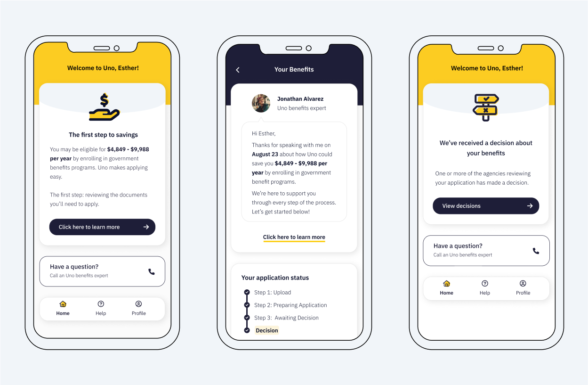
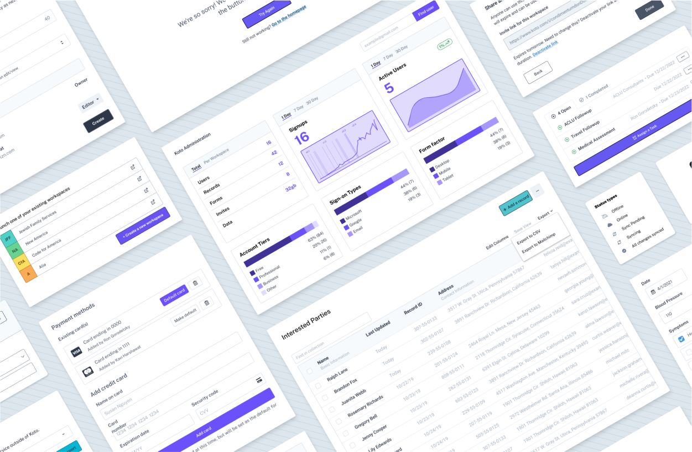
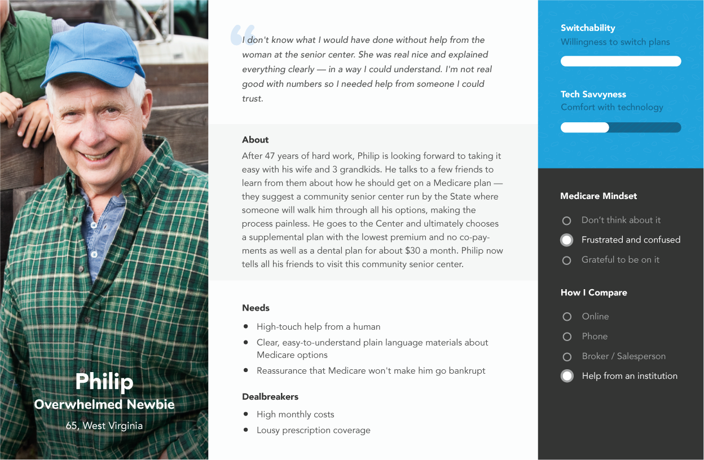
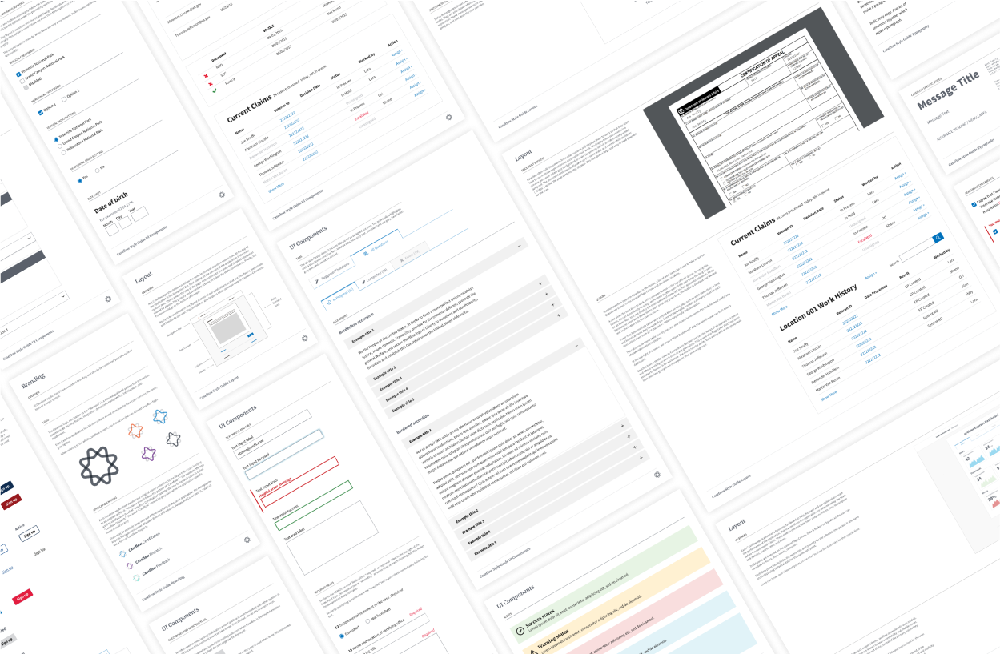

Uno Health Member Portal
MVP for a member-facing web-app to help Medicare members enroll in
state and federal benefits, putting thousands of dollars in their
pockets.
User Research
Interaction Design
Visual Design
Information Architecture
Product Definition

Koto
A lightweight and highly customizable record management tool that
helps mid-sized teams collect and organize information from their
work.
User Research
Interaction Design
Visual Design
Front End Development
Information Architecture
Product Definition

Devoted Health Personas
Personas created with 100+ hours of user research across multiple
states to drive market positioning of a new healthcare plan for the
elderly and disadvantaged.
User Research
Visual Design

Caseflow Product Design
A design system, interaction guidelines, and components for
modernizing disability claim appeal workflows at the Department of
Veterans Affairs.
User Research
Interaction Design
Visual Design
Front End Development
Information Architecture
Product Definition
Bureaucracy Hacking